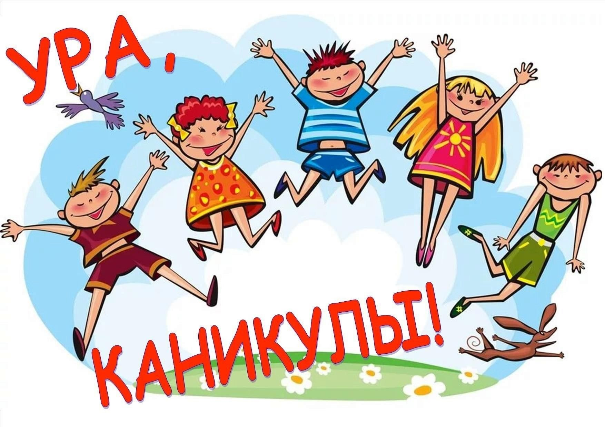

Устроить пикник. Соберите друзей или семью и устройте пикник на природе. Приготовьте вкусные закуски и напитки, расстелите покрывало на зелёной траве и наслаждайтесь хорошей компанией и приятной атмосферой.
Спланируйте вечеринку. Пригласите друзей и организуйте тематическое мероприятие у себя дома. Можно выбрать тему пляжной или ретро-вечеринки и создать атмосферу, соответствующую теме. Подготовьте шарады, вкусные закуски и музыку, чтобы весело провести время вместе.
Отправиться в парк развлечений. Это место, где взрослые могут снова стать детьми, а дети испытать настоящие приключения. И чтобы по-настоящему насладиться всем, что предлагает парк аттракционов, лучше всего уделить этому целый день.
"https://proforientir42.ru/wp-content/uploads/2020/05/kanikuly-1018x509.jpg" alt="лучшие каникулы">

© Altan summer camp, 2024
-
 6
6